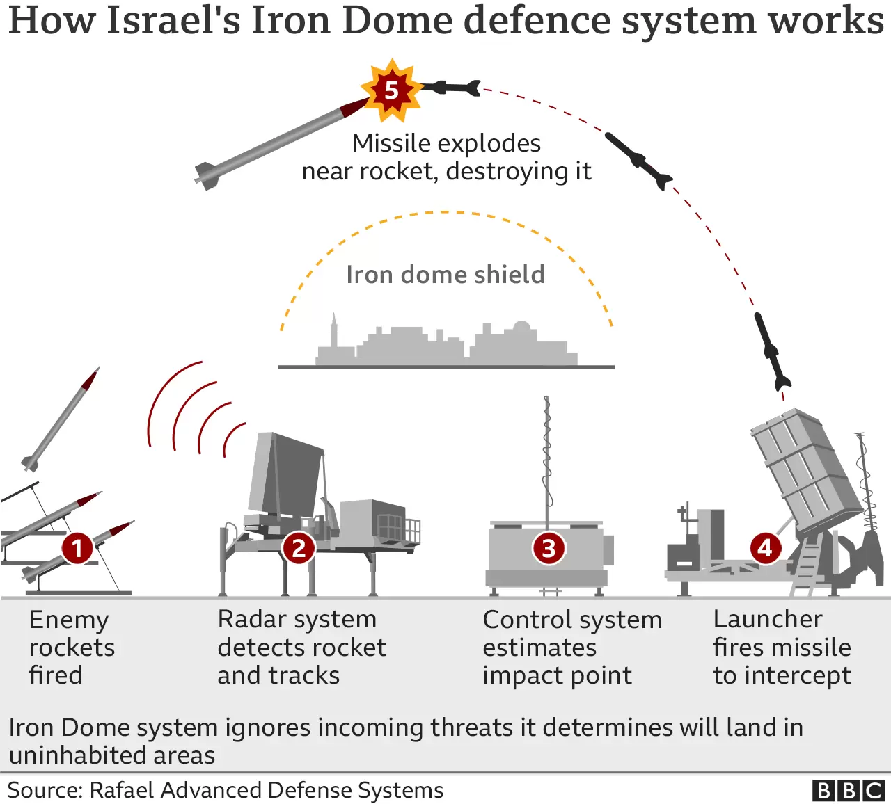

Table of contents |
|---|
| Abstract |
| Introduction |
| Analysis and Discussion |
| References |
Starting by looking at the fundamentals of the Iron Dome Shield, this article explores the evolution of the air defense system proposed by Ronald Reagan, as part of the Strategic Defense Initiative (SDI) program. The air defense shield proven to be one of the most successful throughout the program, has faced both victorious triumphs as well as challenging set backs, all touched on closely throughout the discussion. Furthermore, it dips into ideas of the implication of fiction on future developments and it calibrates a bridge between current and upcoming reality.

Figure 1: Fired Iron Dome missiles (Frantzman, 2023)
The Iron Dome Shield is an air defense system currently only used by Israel. It was introduced by Ronald Reagan in the 1980’s under the programme SDI and it was labeled as a far-fetched “Star Wars” dream by the critics (Gutfeld, 2017). The SDI program stands for Strategic Defense Initiative and had the plan to develop a space-based missile defense program that could intercept large nuclear attacks from other countries (Strategic Defense Initiative (SDI), 1983, 2009). The title of SDI was used for various projects within the program including the Iron Dome Shied System. It being one of the most successful parts of the program.
The Iron Dome is located on the ground, and consists of three main parts, the radar system, the control system and the launcher (BBC, 2023). The way it works is by having an overview of the Israeli sky. The radar system identifies and tracks the missiles and the rockets sent by other countries towards Israel, the control system then calculates an estimated point of impact for the missiles and its approximate trajectory. Finally, the launcher fires its own missile towards the rocket to intercept it causing an explosion in the air and neutralising the attack (BBC, 2023). Statistically speaking, the Iron Dome Shield has stopped around 90% of the missiles and rockets shot towards Israel (BBC, 2023). This high percentage of success has been saving many innocent lives in Israel and it continues to do so today. Since 2011, when the shield first started operating, up until 2021, it stopped and destroyed approximately 1500 rockets (An assessment on Israel's 'Iron Dome' Defense System, 2021). In 2023 alone, the iron dome shield has stopped over 2000 and overall since it started operating, it has stopped approximately 9500 rockets (Frantzman, 2023).
Figure 2: Iron Dome System diagram (BBC, 2023)
Some advantages of using the Iron Dome System are that more lives are saved, less territory is being destroyed by incoming rockets, the number of soldiers sent out in war are decreasing so fewer deaths are occurring. However, one of the greatest advantages is that the project works all the time. Having this possibility, the Iron Dome is always prepared for any attack, and therefore, the country is always defended. This 24/7 system has improved the safety of the country and reduced the number of deaths caused by attack missiles (NEXT IAS Content Team, 2023). Another good factor of the Iron Dome is that the country is indeed protecting itself, through its own system, without asking for additional help from other governments. The system is indeed run by the United States and distributed to Israel, however when it was first proposed by Ronald Reagan it was developed for Israel specifically, therefore no other governments besides these 2 have been implicated in the development of the system. Other countries such as the UK, Finland, Slovakia, and Canada have been purchasing components of the system or the whole entire system, where other nations such as South Korea, Romania and Azerbaijan have expressed interest in buying parts of it (Mordowanec, 2023).
Unfortunately, just like any other defense system, the Iron Dome Shield also has some disadvantages. One of the major ones being the debris left behind after the Israeli missile intercepts the attack rocket. If the attack rocket has not been destroyed into very small pieces, the debris left behind can easily fall through the air, and hit people, their home, workspace, or belongings and still cause impactful damage to their lives (NEXT IAS Content Team, 2023). Other issues with the Iron Domes include that the system is not always successful, although it has stopped high numbers of missiles, it has not stopped all of them and there is never a certainty that the shield will stop all future attacks. The possibility of having some rockets still hitting the country causes a psychological stress on the population of the country and on the Iron Dome itself as it can never be predicted when it will fail or if it will fail (An assessment on Israel's 'Iron Dome' Defense System, 2021).
One important aspect to mention is that the Iron Dome system is expensive. Israel currently has 11 batteries, and each missile has costed $60,000 which is £47,300, so intercepting thousands of rockets will quickly add up to a considerable sum (Berlinger et al., 2023). Compared to an attack missile which costs around $600, the intercepting rockets costs about 50 times more, making it a significant impact on the economy and the income of the country (Boyd, 2023).
Overall, the Iron Dome air defense system, being one of the most advanced ones to exist, has stopped many deaths, has improved the quality of life, and made a major difference in the country’s and people’s livelihood. However, the shield is not invincible, with time, other countries will develop their attack systems to be able to overcome the Iron Dome air defense system. As technology is developing itself, the Iron Dome will also be forced to develop into a newer, better version, or even be combined with fictional ideas, to be able to prevent disasters, which the current air defense system would not be able to withstand. With time, implementing fictional ideas into the current fundamentals of the Iron Dome, will successfully expand the coverage of the program worldwide leading to less casualties and improving the safety of the war zone in question.
An assessment on Israel’s ‘Iron Dome’ Defense System (2021) Global Affairs and strategic studies. Available at: https://www.unav.edu/web/global-affairs/detalle1/-/blogs/an-assessment-on-israel-s-iron-dome-defense-system (Accessed: 27 November 2023).
BBC, What is Israel’s Iron Dome missile system and how does it work? (2023) BBC. Available at: https://www.bbc.co.uk/news/world-middle-east-20385306 (Accessed: 10 November 2023).
Berlinger, J. et al. (2023) The Iron Dome, explained and visualized, CNN. Available at: https://edition.cnn.com/2023/10/09/world/iron-dome-israel-defense-explained-intl-dg/index.html (Accessed: 28 November 2023).
Boyd, I. (2023). Israel’s Iron Dome air defense system works well – here’s how Hamas got around it. [online] Colorado Arts and Sciences Magazine. Available at: https://www.colorado.edu/asmagazine/2023/10/13/israels-iron-dome-air-defense-system-works-well-heres-how-hamas-got-around-it#:~:text=Israel%20has%20at%20least%2010 [Accessed 1 Dec. 2023].
Chúláin, A.N. (2023) The Iron Dome: How does Israel’s missile defence system work?, euronews. Available at: https://www.euronews.com/next/2023/10/21/the-iron-dome-how-does-israels-missile-defence-system-work (Accessed: 23 October 2023).
Frantzman, S.J. (2023) Israel has intercepted 9,500 rockets fired thanks to its multi-layered air defense system, FDD. Available at: https://www.fdd.org/analysis/2023/11/09/israel-has-intercepted-9500-rockets-fired-thanks-to-its-multi-layered-air-defense-system/ (Accessed: 28 November 2023).
Gutfeld, A. (2017) From ‘Star Wars’ to ‘Iron Dome’: US support of Israel’s Missile Defense systems, Taylor and Francis Online . Available at: https://www-tandfonline-com.surrey.idm.oclc.org/doi/full/10.1080/00263206.2017.1350844?scroll=top&needAccess=true (Accessed: 23 October 2023).
Mordowanec, N. (2023) Map shows which countries have Iron Dome Systems, Newsweek. Available at: https://www.newsweek.com/map-iron-dome-systems-1833552 (Accessed: 28 November 2023).
NEXT IAS Content Team (2023). Iron Dome Missile Defence System: Efficacy and Limitations. [online] nextias. Available at: https://www.nextias.com/blog/iron-dome/#:~:text=The%20effectiveness%20of%20Iron%20Dome [Accessed 2 Dec. 2023].
Strategic Defense Initiative (SDI), 1983 (2009) U.S. Department of State. Available at: https://2001-2009.state.gov/r/pa/ho/time/rd/104253.htm (Accessed: 27 November 2023).